Tehavi
Board Game Arena 官方规则文档
Introduction
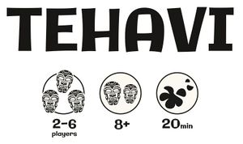
In Tahiti, an ancient legend tells that Ruahatu, god of the Oceans, fell madly in love with Princess Airaro, daughter of the stars. To win her heart, he made a pact with mankind: every morning at dawn, he placed immense pearly conch shells on the shores. The islanders had to fill them with their most beautiful flowers, hoping that their offerings would be chosen to make crowns for the divine Airaro.
But Ruahatu is wilful: if a conch shell overflows, the offering is rejected, and the ocean roars. However, those who manage to offer the most flowers without making the conch shells overflow receive a precious pearl, a token of divine favor.
In TEHAVI, each player embodies one of these disciples attempting to please Ruahatu by carefully choosing their Offering cards. Each turn, you bid to be the one offering the most flowers... without making the conch shell overflow.
Harvest the divine pearls... or watch your offering being washed away by the ocean.
Components
60 Offering cards
|
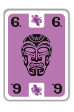 |
Each player will receive 10 Offering cards of a single color, corresponding to one of the six flowers in the game. The cards are numbered from 3 to 12, which corresponds to the number of flowers the player can offer during the turn. |
|---|
10 Conch Shell cards
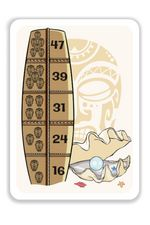 |
The number of tattoos on the lefthand side of the Shield represents the number of players. Based on this number, the Threshold not to exceed in the turn is indicated opposite.
Example: For 4 players, the Threshold for this card is 31. The number of Pearls - ranging from 1 to 3 - located at the bottom right-hand corner of each Conch shell stands for the number of Victory Points the player earns:
|
|---|
18 Totem cards
There are 9 different Totem cards made of 3 different materials. Depending on the Totem’s material, the effect is applied at a specific point in the turn, as follows :
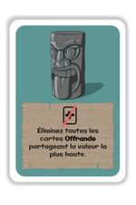 |
Stone Totems (grey): Eliminate all Offering cards sharing the highest revealed value. |
|---|---|
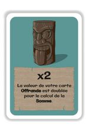 |
Wooden Totems (brown): Double the value of your Offering card when computing the turn’s total. |
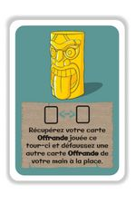 |
Gold Totems (gold): Retrieve your Offering card played this turn and discard another card instead. |
Note: The visuals may differ, depending on your country/selected language
Setup
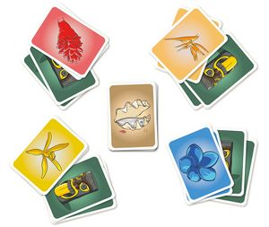
- Each player chooses a color and takes the 10 corresponding Offering cards.
- Shuffle the Conch Shell cards and place them face down in the center of the table.
- Shuffle the Totem cards and deal 2 face down to each player.
Note: If it is the first time you are playing TEHAVI, you may play without the Totem cards.
Gameplay
TEHAVI consists of three rounds of respectively 10, 9, and 8 turns. At the end of each round, players add up the Pearls they have earned by winning Conch shell cards.
At the end of the three rounds, the player with the most Victory Points wins the game.
1 • Card Selection
- Turn the top Conch shell card face up. Focus on the Shield to identify the Flower Threshold you must not exceed for this turn.
- Each player secretly chooses an Offering card from his/her hand. Each player may also choose a Totem card.
Note: Playing an Offering card is mandatory; playing a Totem card is optional.
- When all participants are ready, the cards are revealed simultaneously.
- If one or more Stone Totem cards have been played, resolve their effects immediately and simultaneously before proceeding with the scoring. A player can be targeted - even unintentionally - by their own Totem card, the resolution of which is nonetheless mandatory.
2 • Turn Outcome
- Compute the Total for the current turn by adding the values of the Offering cards one after the other in ascending order. Cards of the same value are added simultaneously.
- If, by adding one or more Offering cards, the Total exceeds the threshold indicated on the Conch shell card, these cards are immediately discarded, without being included in the Total.
- If a Wooden Totem card has been played, apply its effect just before the corresponding Offering card is added to the Total.
- Once all Offering cards have been either added to the Total or discarded, the player who played the highest-value card among the remaining cards wins the Conch shell card.
- If several cards share the highest value, they are ignored. The Conch shell card thus goes to the next player with the highest value amongst the remaining cards, if any. If there are no valid cards left, the Conch shell card is discarded.
- The player who wins the Conch shell card places it in front of him/her. Then, all Offering and Totem cards played this turn are discarded. If a Gold Totem card has been played, apply its effect now.
Carry on like this, turn after turn, until all Conch shell cardshave been either won or discarded.
3 • Examples of Turns
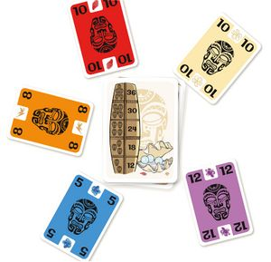
Example A (5 players):
- The cards are revealed simultaneously. The Threshold for 5 players is 30.
- The cards are added in ascending order to compute the Total : The cards with a value of 10 should then be added simultaneously to the Total :
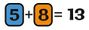
But since 33 exceeds the threshold set at 30, the cards with a value of 10 cannot be added; they are discarded, and the Total remains at 13.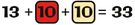
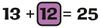
- The player who played the card with a value of 12 wins the Conch shell card and its 3 Pearls.
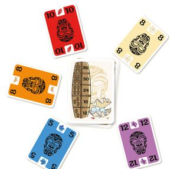
Example B (5 players):
- The cards are revealed simultaneously. The Threshold for 5 players is 30.
- The cards are added in ascending order to compute the Total : The cards with a value of 8 should then be added simultaneously to the Total :
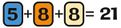
The card with a value of 10 is discarded because adding it would exceed the Threshold of 30.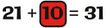
The card with a value of 12 is also discarded for the same reason.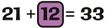
- Since two cards share the highest value (the cards with a value of 8), they are ignored. Therefore, the player who played the card with a value of 5 wins the Conch shell card and its 3 Pearls.
End of Round
When the stack of Conch shell cards is empty, each player adds up the Pearls on the Conch shell cards he/she won. During this first round, each Pearl is worth 1 Victory Point.
Setting Up the Next Round
Each player retrieves all of his/her Offering cards and randomly discards one, which cannot be played again during the rest of the game.
Gather the Conch shell cards, remove one from the deck at random, face down, before forming a new stack.
All Totem cards are shuffled again, whether they have been played before or not. Deal two Totem cards to each player.
At the end of each round, the Victory Points earned are added to the scores from the previous rounds.
Note: During the third and final round, each Pearl counts twice!
End of Game
The final score is computed by adding up the scores from the three rounds.
The player with the most Victory Points wins the game and becomes Ruahatu’s favorite disciple !
In the event of a tie, the players share the divine favor !
Credits
- Game design: Xavier Jauneault
- Illustrations: Mathieu Ben Driem
- Publisher: Aries Studios
- Proofreading: Sarah Hermier & Baptiste Perocheau
- Translation: Christina DM Taraud
Acknowledgments:
Xavier thanks the stores and customers who made EKKO a success, and hopes that TEHAVI will follow the same path.
Thanks to Mathieu for his involvement and his loyalty.
Mathieu thanks Xavier for his trust and friendship, as well as Maëlle, Raphaëlle, and Zacharie for their support and their cheerfulness.
2025 © All rights reserved Aries Studios. Reproduction prohibited. Aries Studios is a trademark owned by Maxamar LLC.